Entre la Ciudad y el Huerto
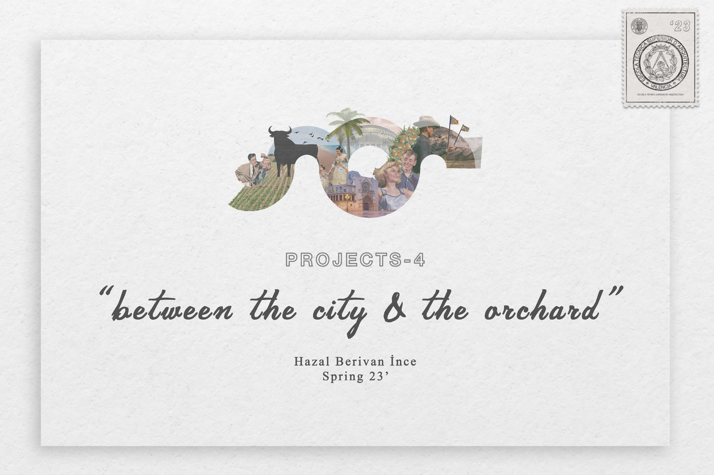
ABOUT THE PROJECT
An innovative art school proposal that seamlessly blends modern functionality with a nostalgic tribute to historical orchards, providing contemporary solutions to meet the needs of the local community.
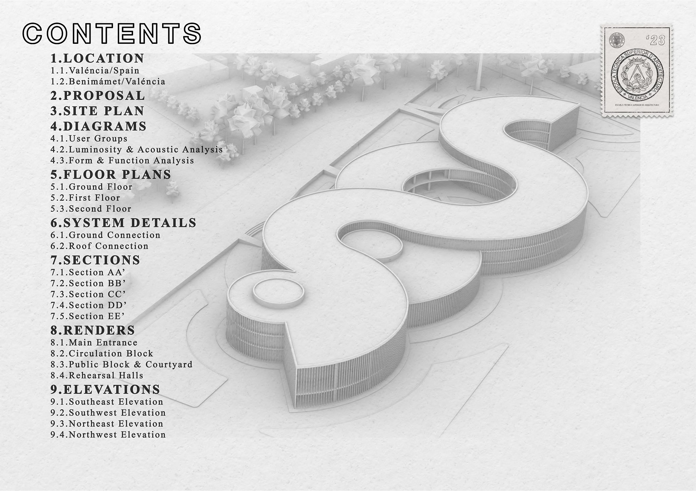
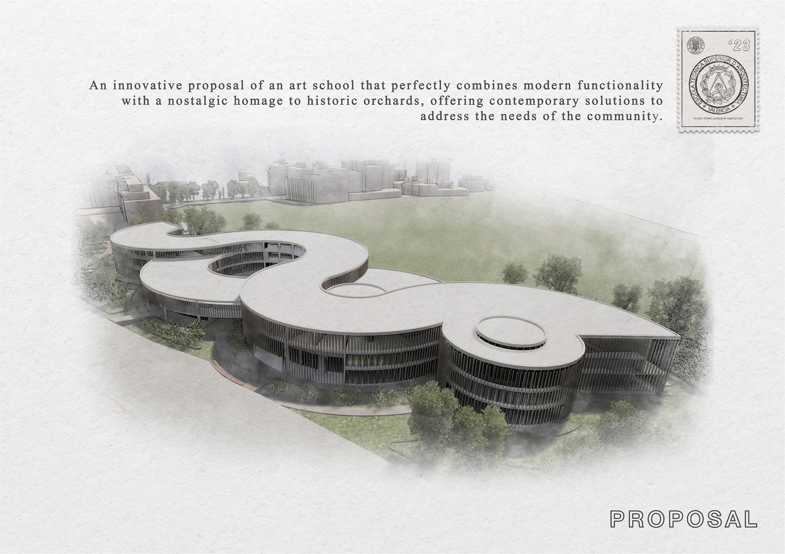
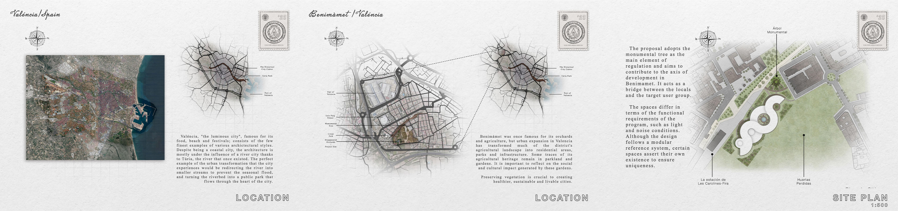
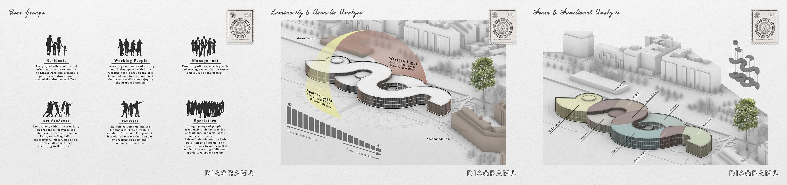
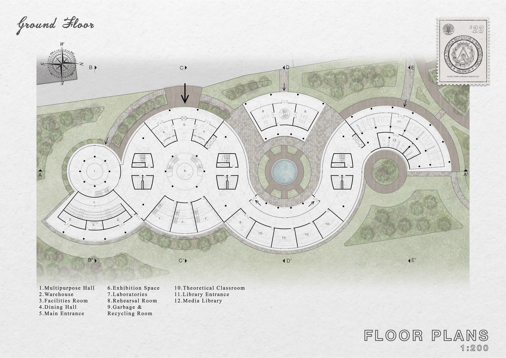
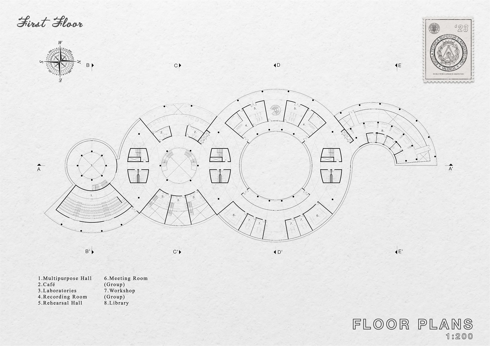
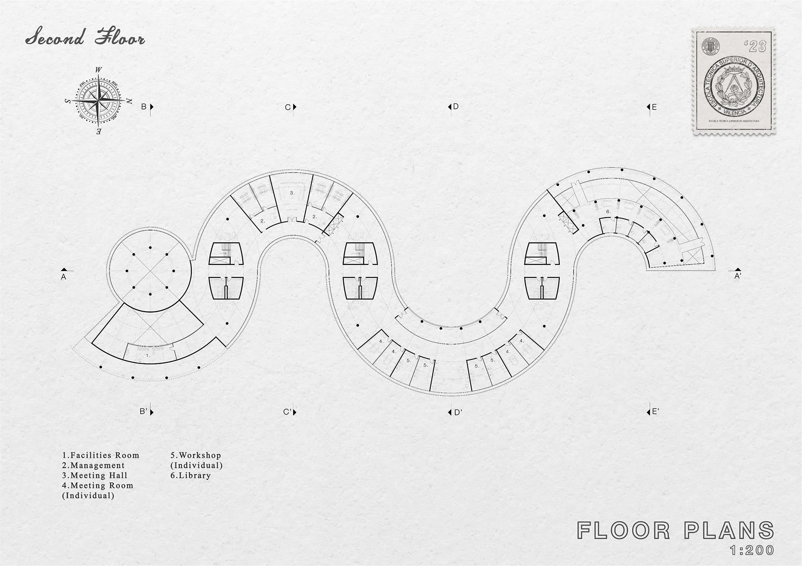
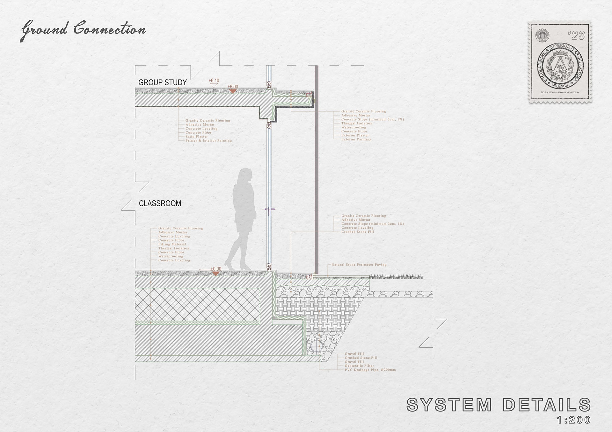
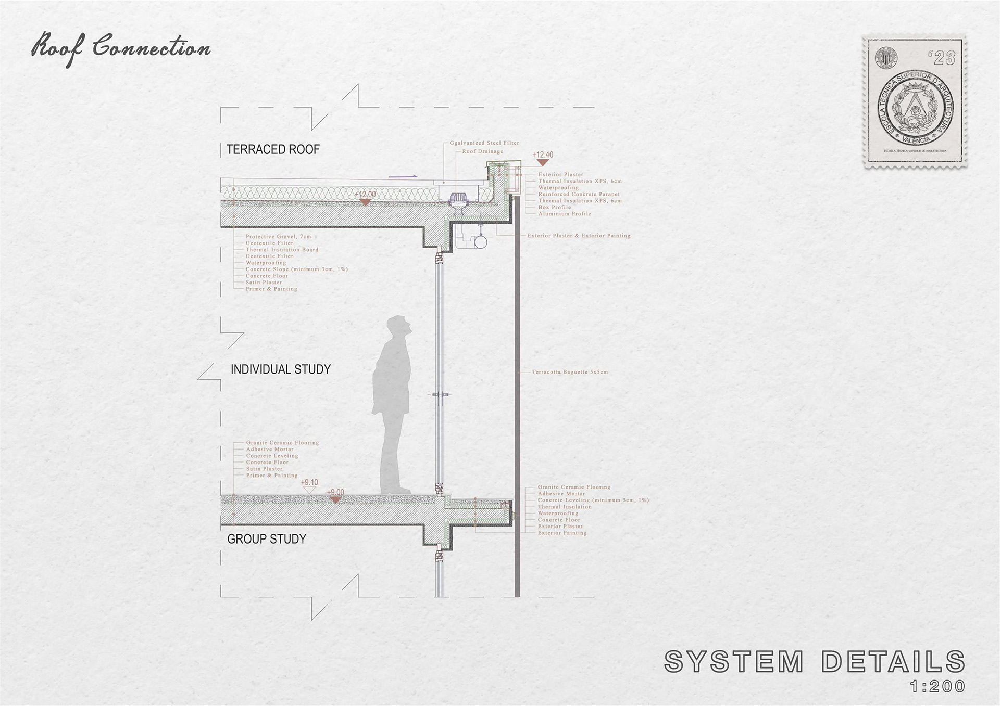
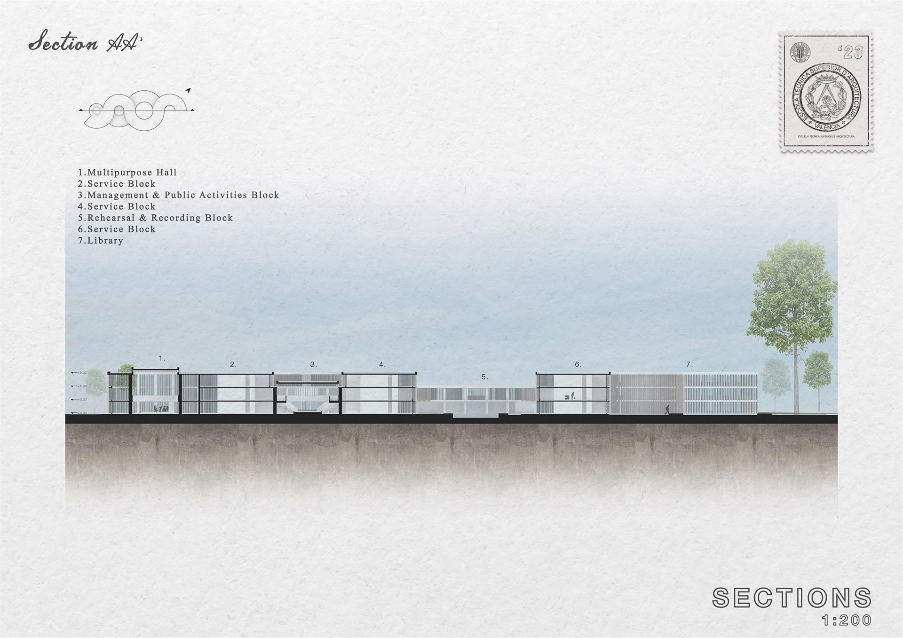
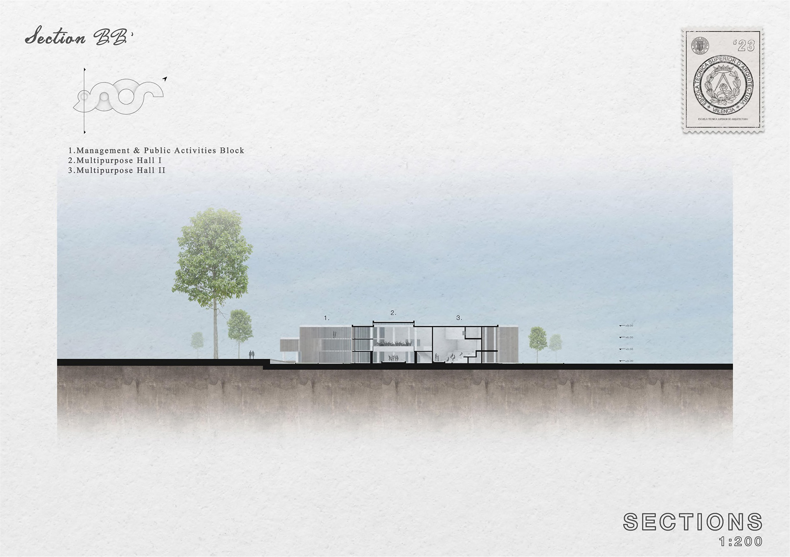
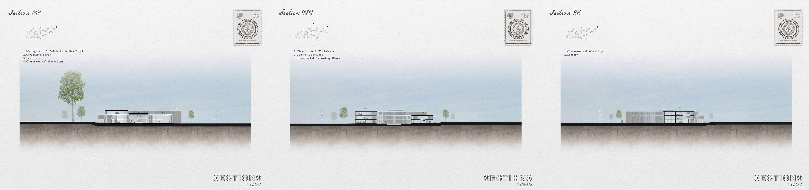
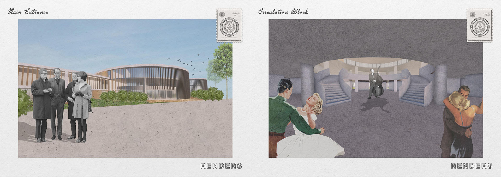
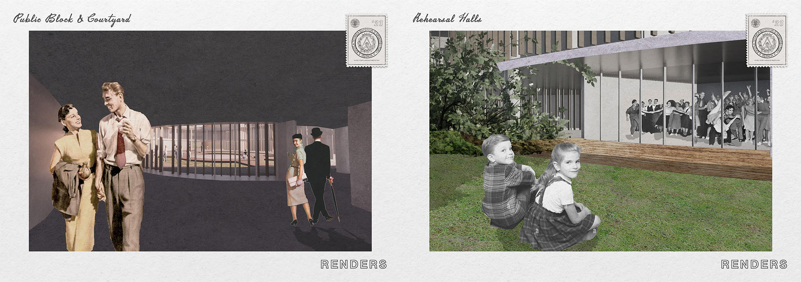
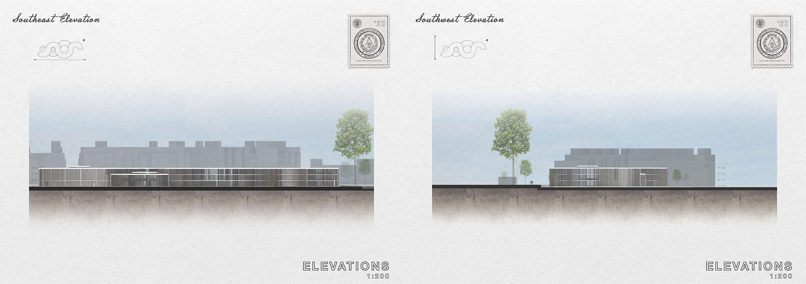
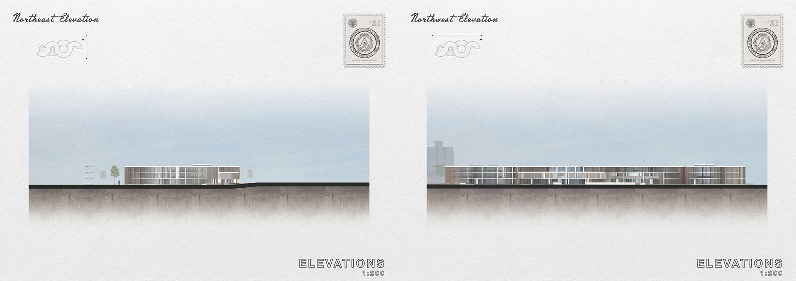